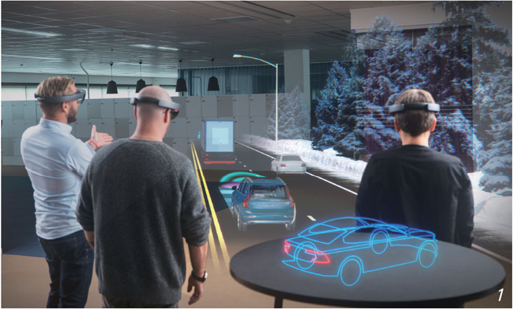

|  |
가상, 증강, 혼합현실은 모두 XR 기술의 요소입니다.
가상현실(VR)은 사용자를 가상 환경에 넣습니다. VR 사용자는 보통 헤드셋을 착용해 가상 세계로 이동할 수 있습니다. 조금 전까지 실제 방에 서 있었는데 한순간에 시뮬레이션된 환경에 들어갈 수 있죠.
최신 VR 기술은 이러한 경계를 확장하여 가상 환경을 실제 세계처럼 보이고 동작하게 만듭니다. 또한 촉각, 청각, 후각을 포함한 추가 감각에 대한 지원을 추가하고 있습니다.
VR을 통해 게이머는 비디오 게임에 완전히 몰입할 수 있고, 디자이너와 고객은 건설 프로젝트를 검토하여 공사 전에 세부 사항을 결정할 수 있으며, 유통업체는 실제 매장에 적용하기 전에 가상 디스플레이를 테스트할 수 있습니다.
증강현실(AR)은 렌더링된 이미지가 실제 세계에 오버레이되는 기술입니다. 모바일 게임 ‘포켓몬 고(Pokémon GO)’는 플레이어가 동네를 돌아다닐 때 잔디밭과 보도에 컴퓨터로 렌더링된 괴물을 등장시킴으로써 AR이 주류 기술이 되는데 기여했습니다.
AR 그래픽은 휴대폰, 태블릿, 기타 디바이스를 통해 볼 수 있어 사용자에게 새로운 대화형 경험을 제공합니다. 예를 들어 네비게이션도 AR로 개선될 수 있는데요. 2D 지도 대신, 전면 유리에 정보를 띄워 운전자의 전방 시야 위에 중첩되게 할 수 있으며, 시뮬레이션 화살표는 운전자가 정확히 어디로 방향을 바꿔야 하는지 알려줍니다.
혼합현실(MR)은 실제 세계와 렌더링된 그래픽을 완벽하게 통합하여 사용자가 디지털 세계, 물리적 세계와 직접 상호 작용할 수 있는 환경을 만듭니다.
MR은 실제 물체와 가상 물체를 혼합하여 단일 디스플레이에 함께 표시합니다. 사용자는 헤드셋이나 전화, 태블릿을 통해 MR 환경을 경험할 수 있으며, 디지털 객체를 이동하거나 실제 세계에 배치하여 상호 작용할 수 있습니다.
|